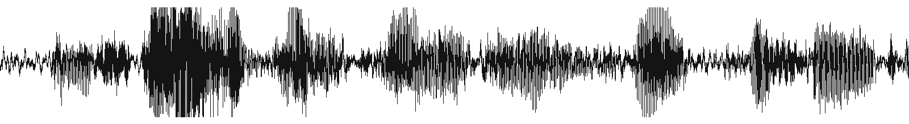
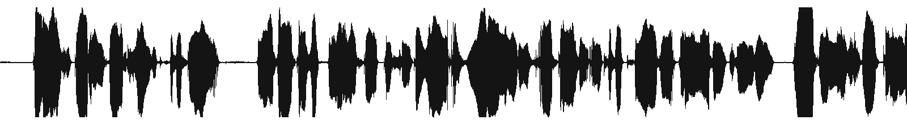
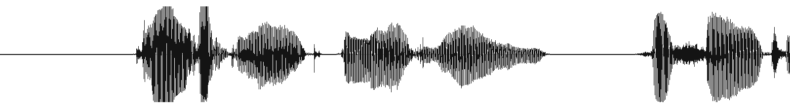
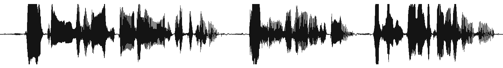
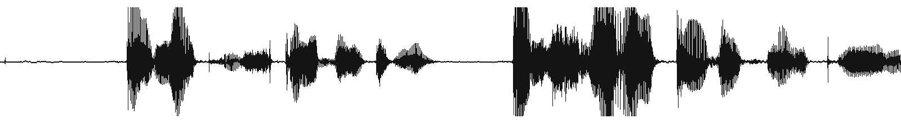
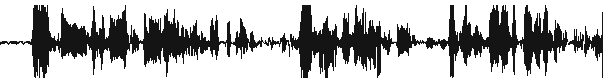
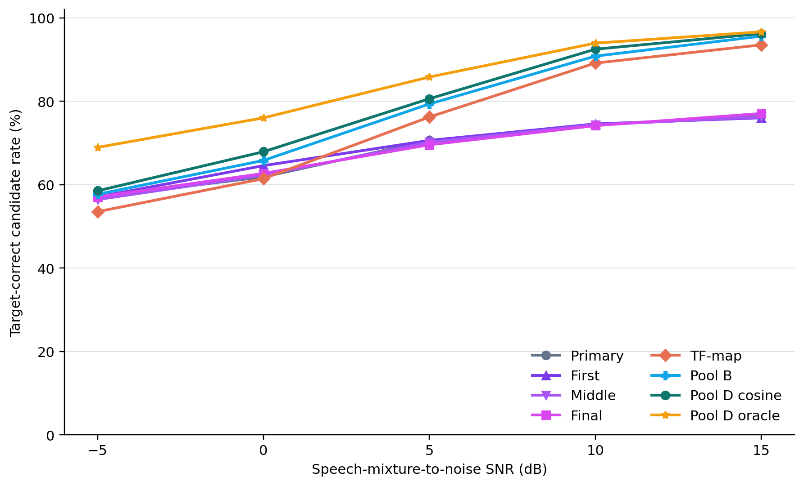

Status: Frozen Noisy TEST and all reported Clean TEST rows are complete.
Overview
Two failures are easy to conflate. A deterministic waveform TSE system does not introduce
autoregressive token hallucination, but under noise it may sound distorted or extract the wrong
speaker. An autoregressive speech model can raise estimated perceptual quality, yet its learned
prior can change words or speaker identity. Our rule is therefore simple: repair the
target evidence first, then ground generation on that repaired evidence.
Key result. On the frozen 6,000-trial natural-noise TEST set, CDCS-5 direct
reduces WER from 46.17% to 35.64%, content-switch rate from
15.57% to 7.95%, and acoustic-switch rate from
14.57% to 7.17% relative to the primary extractor.
Problem formulationWhy repair must precede grounding
(a) Deterministic waveform TSE

Mixture y · A + B + noise

Target enrolment r · speaker A
↓
Frozen waveform TSE

Distorted target A

Interferer B
No autoregressive token hallucination
May distort speech or follow the interferer
(b) Ungrounded generation
Mixture features MSpeaker condition S
↓
Qwen-TSE UD
↓

Perceptually plausible output
Higher predicted naturalness
Content substitution / insertion · speaker drift
(c) Grounding a bad anchor

Confused estimate B
→
zᴮ
→
Fixed CSG
↓
Confident wrong-speaker output B
Grounding can preserve a bad anchor
Constraining drift does not repair identity
(d) Our principle
Five frozen TSE candidates↓CDCS-5↓Target-consistent evidence c*
CDCS-5 directcontent fidelity
Qwen-TSE fixed CSGconstrained generation
CDCS repairs who; CSG constrains what.
Figure 1. Why repair must precede grounding. Deterministic TSE can
distort speech or follow the interferer; autoregressive decoding can drift in content
or speaker; and grounding confused evidence may reinforce the wrong identity. We therefore
repair evidence identity with CDCS-5 before fixed CSG constrains Qwen-TSE generation.
Waveforms are amplitude-normalized traces computed from the released listening examples;
representative nodes need not belong to the same trial.
UD, adaptive CSG, and GNR are evaluation ablations and are omitted from the main method path.
Figure 2. Proposed repair-before-grounding pipeline. CDCS-5 constructs
five frozen, conditioning-diverse TSE candidates and selects repaired evidence with a
frozen ECAPA encoder. The waveform is either returned directly or tokenized to ground
the fixed Qwen-TSE decoder, where CSG constrains token drift. Candidate thumbnails are
representative real traces; independent first/final-view candidate audio is not publicly exposed.
Method
Conditioning-diverse candidate selection (CDCS-5) selects the most enrollment-consistent
waveform from five frozen TSE candidates. It can be returned directly as the content-fidelity
endpoint, or tokenized as evidence for Qwen-TSE. The Qwen-TSE speech prior supplies the
estimated-quality gain; CSG keeps its
next-token choices close to the repaired evidence. This ordering matters: CSG limits generation
drift, but cannot repair a wrong-speaker anchor by itself.
Token-level grounding intuition
The speech tokenizer represents each acoustic token with eight ternary FSQ coordinates.
Grounding changes token selection inside Qwen-TSE; it does not change the CDCS-5 selector.
1
Qwen-TSE proposes
Raw logits rank the next token. A fluent high-score proposal may still drift from the evidence.
Top-20 proposals are intersected with a radius-2 Hamming ball around the immutable CSG anchor.
anchor d = 0p₁ ✓ d = 1p₂ d = 2p₃ ✕ d = 4
No feedback: accepted edits do not alter later token history.
Figure 3. Illustrative token-level grounding. Fixed CSG uses
λ = 1, w = 0. The reported adaptive noisy branch resolved to
λ = 0.5, w = 1 for every trial; GNR uses
K = 20, R = 2 and is reported as a negative ablation because local code proximity did not lower WER.
Audio examples
All four examples come from the completed, frozen 6,000-trial natural-noise TEST set.
Clean targets and interferers are provided only for interpretation; the deployed system never
receives them.
What to listen for: (1) whether the output follows the enrolled speaker,
(2) missing, substituted, or invented words, and (3) the fidelity–naturalness trade-off
between direct evidence and grounded generation.
Example 1 of 4
Example 1 — WeSep extracts the wrong speaker under noise
Primary WeSep exactly follows the same-gender interferer rather than the enrolled target. CDCS-5 selects the complementary
TF-map/context candidate, after which fixed CSG preserves the repaired target content:
WER: 162.5% → 0% and
(C-sw., A-sw.): (1, 1) → (0, 0).
Hear the noisy input and the speaker WeSep mistakenly follows
Noisy mixturesystem input
Target enrollmentspeaker condition
Clean interfererevaluation only
Clean targetevaluation only
Primary WeSepwrong speaker · WER 162.5%
CDCS-5 directrepaired evidence · WER 0%
Qwen-TSE UDWER 25.0%
Qwen-TSE fixed CSGgrounded · WER 0%
Frozen ASR-consistency transcript · Whisper-small.en; clean target reference used only for evaluation
Target
through the black night rain he sang to
Interferer
in the stern i carved the tail up almost as high as the head
Primary ASR
in the stern i carved the tail up almost as high as the head WER 162.50%
CDCS-5 ASR
through the black night rain he sang to WER 0%
Qwen-TSE UD ASR
through the black nightren he sang to WER 25.00%
Fixed CSG ASR
through the black night rain he sang to WER 0%
Why both stages matter: a relatively high MOS cannot reveal that Primary extracted the wrong person. CDCS-5 first repairs who is speaking; fixed CSG then removes the remaining lexical drift.
View compact high-resolution spectrogramClean target, wrong-speaker Primary, repaired CDCS-5 evidence, and grounded Qwen-TSE output. Select the figure for the 2,000-pixel original.
Example 2 — grounding blocks speaker collapse
The repaired evidence is already correct, but ungrounded Qwen-TSE collapses to one word
and crosses the acoustic speaker boundary. Fixed CSG restores both identity and content:
UD WER = 100% → CSG WER = 0% and
A-sw.: 1 → 0.
Listen to the noisy input, enrollment, and interferer
Noisy mixturesystem input
Target enrollmentspeaker condition
Clean interfererevaluation only
Clean targetevaluation only
Primary WeSepWER 0%
CDCS-5 directrepaired evidence · WER 0%
Qwen-TSE UDspeaker collapse · WER 100%
Qwen-TSE fixed CSGspeaker restored · WER 0%
Frozen ASR-consistency transcript · Whisper-small.en; clean target reference used only for evaluation
Target
she had almost forgotten that it was here within touch and sight
Interferer
like the doves voice like transient day
CDCS-5 ASR
she had almost forgotten that it was here within touch and sight WER 0%
Qwen-TSE UD ASR
you WER 100%
Fixed CSG ASR
she had almost forgotten that it was here within touch and sight WER 0%
Why grounding matters: the generative prior can ignore otherwise correct evidence. Fixed CSG keeps decoding anchored to its content and target identity.
View compact high-resolution spectrogramClean target, CDCS-5 evidence, ungrounded speaker collapse, and fixed-CSG recovery. Select the figure for the 2,000-pixel original.
Example 3 — grounding repairs lexical drift
Here the ungrounded decoder retains the target speaker but substitutes plausible words.
Fixed CSG restores the full target sentence:
UD WER = 71.43% → CSG WER = 0%, while
C-sw. = A-sw. = 0 throughout.
Listen to the noisy input, enrollment, and interferer
Noisy mixturesystem input
Target enrollmentspeaker condition
Clean interfererevaluation only
Clean targetevaluation only
Primary WeSepWER 0%
CDCS-5 directrepaired evidence · WER 0%
Qwen-TSE UDlexical drift · WER 71.43%
Qwen-TSE fixed CSGcontent restored · WER 0%
Frozen ASR-consistency transcript · Whisper-small.en; clean target reference used only for evaluation
Target
in actual fact there are doubtless various
Interferer
i am so very tired of being all alone here
CDCS-5 ASR
in actual fact there are doubtless various WER 0%
Qwen-TSE UD ASR
an asheville fact there are that was very WER 71.43%
Fixed CSG ASR
in actual fact there are doubtless various WER 0%
Why WER is still needed: C-sw. and A-sw. are discrete confusion diagnostics, not substitutes for word accuracy. This is lexical drift without an identity switch, and fixed CSG repairs it.
View compact high-resolution spectrogramClean target, CDCS-5 evidence, ungrounded lexical drift, and fixed-CSG content recovery. Select the figure for the 2,000-pixel original.
Example 4 — fidelity–naturalness operating points
Both endpoints preserve the complete target transcript and speaker identity. The direct output
retains stronger reference alignment, while grounded generation is rated substantially more natural:
UTMOS: 1.307 → 3.827 and
DNSMOS OVRL: 1.270 → 3.171, with
eSTOI: 0.692 → 0.621.
Listen to the noisy input, enrollment, and interferer
Noisy mixturesystem input
Target enrollmentspeaker condition
Clean interfererevaluation only
Clean targetevaluation only
Primary WeSepWER 0% · UTMOS 1.48
CDCS-5 directWER 0% · UTMOS 1.31
Qwen-TSE UDWER 0% · UTMOS 3.78
Qwen-TSE fixed CSGWER 0% · UTMOS 3.83
Frozen ASR-consistency transcript · Whisper-small.en; clean target reference used only for evaluation
Target
i tell him to give me some coffee if it is good
Interferer
know then son of my heart that this fainting lady
All output ASRs
i tell him to give me some coffee if it is good WER 0%
Two honest operating points: CDCS-5 direct favors waveform/reference fidelity; fixed CSG uses the speech prior to improve predicted naturalness while preserving words and speaker here. The modest eSTOI decrease is reported rather than hidden.
View compact high-resolution spectrogramClean target, CDCS-5 direct, ungrounded generation, and fixed CSG. Select the figure for the 2,000-pixel original.
Selection protocol. These are mechanism-focused examples, not aggregate evidence. After requiring natural-noise TEST membership, complete paired outputs, valid decoding, and available WAVs, each case is the top-ranked result of a fixed failure-mode rule: hardest same-gender exact-interferer recovery; shortest ungrounded acoustic-switch collapse with exact fixed-CSG recovery; largest eSTOI recovery among bounded non-switch lexical-drift cases; and largest UTMOS gain under matched zero-WER, zero-switch quality constraints. Corpus-level claims remain those in the frozen tables below. Machine-readable case record.
Results
Clean and noisy conditions are reported separately, and DEV is kept distinct from TEST.
The headline noisy table uses the 6,000 natural-noise trials; the 2,400 controlled-SNR
trials appear separately below rather than being pooled into the main result.
WER ↓
WER = (S + D + I) / Nref × 100%. Reported as the uncapped utterance mean against a same-ASR clean-target transcript.
Spk. margin ↑
Target-minus-interferer CAMPPlus cosine similarity; a negative value triggers A-sw.
DNSMOS ↑
Predicted P.808 quality for clean speech and P.835 OVRL for noisy speech.
UTMOS ↑
Reference-free predicted naturalness; it does not establish content or speaker identity.
TEST · CLEAN
Frozen Clean TEST
6,000 trials per system. Clean UTMOS is a post-hoc metric-only evaluation of unchanged frozen outputs; all six displayed systems have 6,000/6,000 scores and zero failures. UTMOS manifest.
Frozen Clean TEST results for the six paper systems
System
Grounding evidence
WER ↓
C-sw. ↓
A-sw. ↓
Spk. margin ↑
DNSMOS P.808 ↑
UTMOS ↑
Primary WeSep
—
13.68
7.00
6.98
0.449
3.688
3.606
TF-map/context WeSep
—
8.56
2.72
2.55
0.491
3.718
3.702
CDCS-5 direct
—
6.54
0.88
0.78
0.506
3.699
3.647
Qwen-TSE UD
CDCS-5
14.08
1.00
0.43
0.422
3.705
3.914
Qwen-TSE fixed CSG
CDCS-5
12.74
1.00
0.23
0.422
3.699
3.910
Qwen-TSE GNR
CDCS-5
13.43
1.07
0.23
0.423
3.702
3.915
Reading. CDCS-5 direct is the best clean content-fidelity endpoint. Qwen-TSE systems receive higher predicted naturalness, but UTMOS does not establish content or speaker correctness.
TEST · NATURAL NOISE
Frozen Noisy TEST
6,000 natural-noise trials per system from the one permitted TEST run.
Frozen natural-noise TEST results
System
Grounding evidence
Raw WER ↓
C-sw. ↓
A-sw. ↓
Spk. margin ↑
DNSMOS OVRL ↑
UTMOS ↑
Primary WeSep
—
46.17
15.57
14.57
0.304
2.291
2.061
CDCS-5 direct
—
35.64
7.95
7.17
0.363
2.201
1.990
Qwen-TSE UD
CDCS-5
58.00
10.13
1.68
0.378
3.086
3.253
Qwen-TSE fixed CSG
CDCS-5
53.90
9.48
0.52
0.386
3.082
3.147
Qwen-TSE adaptive CSG
CDCS-5
50.99
9.72
0.98
0.384
3.093
3.196
Qwen-TSE adaptive CSG+GNR
CDCS-5
54.79
9.65
0.98
0.384
3.095
3.207
Reading. CDCS-5 direct is the strongest content-fidelity endpoint. Within Qwen-TSE, fixed CSG reduces both raw WER and acoustic switching relative to UD, but no generated condition overtakes CDCS-5 direct on WER.
DEV · CLEAN
Clean DEV system comparison
6,000 trials per system; configuration selection and ablation evidence. A complete frozen Clean DEV UTMOS table was not run, so TEST UTMOS values are not copied here.
Clean DEV system-level results
System
Grounding evidence
WER ↓
C-sw. ↓
A-sw. ↓
Spk. margin ↑
DNSMOS P.808 ↑
Primary WeSep
—
13.88
7.10
6.88
0.459
3.709
CDCS-2 direct
—
7.29
1.40
1.17
0.513
3.728
CDCS-5 direct
—
7.01
1.13
0.88
0.515
3.722
CDCS-5 S3 reconstruction
—
13.02
1.25
0.52
0.427
3.736
Qwen-TSE UD
Primary
20.97
7.20
1.23
0.419
3.745
Qwen-TSE fixed CSG
Primary
19.06
7.15
1.07
0.419
3.737
Qwen-TSE UD
CDCS-2
14.82
1.58
0.72
0.427
3.754
Qwen-TSE fixed CSG
CDCS-2
12.88
1.52
0.60
0.428
3.745
Qwen-TSE UD
CDCS-5
14.10
1.32
0.55
0.428
3.752
Qwen-TSE fixed CSG
CDCS-5
12.51
1.27
0.48
0.428
3.744
DEV · NATURAL NOISE
Noisy DEV system comparison
6,000 natural-noise trials per system. Raw, uncapped utterance-mean WER is shown; the separate 2,400 controlled-SNR DEV trials are reported below.
Natural-noise DEV results
System
Grounding evidence
Raw WER ↓
C-sw. ↓
A-sw. ↓
Spk. margin ↑
DNSMOS OVRL ↑
UTMOS ↑
Primary WeSep
—
45.88
16.12
15.15
0.312
2.302
2.046
CDCS-5 direct
—
39.62
8.70
7.28
0.371
2.193
1.969
Qwen-TSE UD
CDCS-5
59.57
10.62
2.30
0.383
3.098
3.261
Qwen-TSE fixed CSG
CDCS-5
55.48
10.25
0.98
0.391
3.092
3.154
Qwen-TSE adaptive CSG
CDCS-5
55.85
10.07
1.28
0.390
3.107
3.208
Qwen-TSE adaptive CSG+GNR
CDCS-5
59.51
10.20
1.30
0.390
3.110
3.221
Robustness and cost

Figure 4. Candidate recovery by controlled SNR on frozen Noisy DEV.
Recovery rises at 10–15 dB, where wrong-speaker extraction remains identifiable and
complementary target evidence is still usable. Across the combined 8,400-trial Noisy DEV set
(6,000 natural-noise + 2,400 controlled-SNR), selected recovery is
54.87%, the five-candidate oracle ceiling is 62.55%,
and control regression is .391%.
CONTROLLED NOISE · DEV AND TEST
Performance by SNR
Each cell reports raw WER / A-sw. in percent; 480 trials per SNR and system. Raw WER may exceed 100% because ASR insertions are not capped. Every Qwen-TSE row uses CDCS-5 grounding evidence; GNR uses K = 20, R = 2.
Controlled-SNR DEV
Controlled-SNR DEV raw WER and acoustic-switch rate
System
−5 dB
0 dB
5 dB
10 dB
15 dB
CDCS-5 direct
114.12 / 37.29
98.30 / 31.25
63.70 / 19.79
30.80 / 8.12
15.88 / 3.75
Qwen-TSE UD
137.56 / 11.46
115.70 / 5.62
92.36 / 2.50
50.06 / 2.29
29.80 / 1.67
Qwen-TSE fixed CSG
132.99 / 3.54
104.78 / 2.92
93.56 / 1.25
45.69 / 1.25
25.96 / 1.04
Qwen-TSE adaptive CSG
130.58 / 5.83
110.77 / 2.92
84.84 / 1.46
50.42 / 1.46
26.38 / 1.04
Qwen-TSE adaptive CSG+GNR
139.37 / 5.62
113.81 / 3.33
79.56 / 1.46
50.63 / 1.46
26.94 / 1.04
Controlled-SNR TEST
Controlled-SNR TEST raw WER and acoustic-switch rate
System
−5 dB
0 dB
5 dB
10 dB
15 dB
CDCS-5 direct
104.78 / 34.58
89.49 / 29.17
54.03 / 16.67
27.95 / 7.08
20.87 / 4.79
Qwen-TSE UD
136.69 / 9.58
113.67 / 6.67
78.25 / 4.17
47.15 / 2.29
29.73 / 2.08
Qwen-TSE fixed CSG
137.44 / 3.33
107.18 / 2.71
83.66 / 2.08
41.33 / 2.08
24.93 / 1.67
Qwen-TSE adaptive CSG
116.77 / 7.08
106.38 / 3.96
79.37 / 2.92
45.22 / 1.88
25.89 / 2.08
Qwen-TSE adaptive CSG+GNR
116.93 / 6.67
121.06 / 4.58
79.92 / 2.71
43.63 / 2.08
26.00 / 2.08
MECHANISM · FOUR SPLITS
Candidate repair and safety
Swap/control cohorts are defined by SI-SDR and therefore are not the same denominator as the full-set CAMPPlus A-sw. rate.
Candidate repair and safety across Clean and Noisy DEV and TEST
Split
Trials
Primary swaps
Selected recovered
Oracle recovered
Controls
Regressions
Clean DEV
6,000
405
355 (87.65%)
362 (89.38%)
5,586
2 (.0358%)
Clean TEST
6,000
398
355 (89.20%)
360 (90.45%)
5,588
2 (.0358%)
Noisy DEV · natural
6,000
679
397 (58.47%)
449 (66.13%)
4,707
19 (.4037%)
Noisy TEST · natural
6,000
646
374 (57.89%)
431 (66.72%)
4,709
8 (.1699%)
Show Clean DEV deployment cost
Configuration
Candidates
Qwen-TSE passes
RTF ↓
Peak VRAM
Swap recovery ↑
Primary WeSep
1
—
0.057
20.37 GiB
0.00%
CDCS-2 direct
2
—
0.105
20.38 GiB
83.21%
CDCS-5 direct
5
—
0.208
20.47 GiB
87.65%
CDCS-2 + Qwen-TSE CSG
2
1
0.473
20.38 GiB
79.01%
CDCS-5 + Qwen-TSE CSG
5
1
0.573
20.47 GiB
80.74%
Evaluation protocol
Candidate pools, thresholds, CSG, and GNR settings are selected on DEV.
Noisy TEST was executed once with hash-checked code, models, and inputs.
Audio cases follow a deterministic selection rule rather than manual cherry-picking.
WER, DNSMOS, and UTMOS are complementary proxies and do not replace listening tests.
Claim boundary. The main claim is that target-consistent candidate selection
repairs many wrong-speaker TSE failures. The optional LLM branch studies grounding and drift;
it does not achieve the best WER, and GNR is retained as a negative ablation.
 TF-map/context
TF-map/context